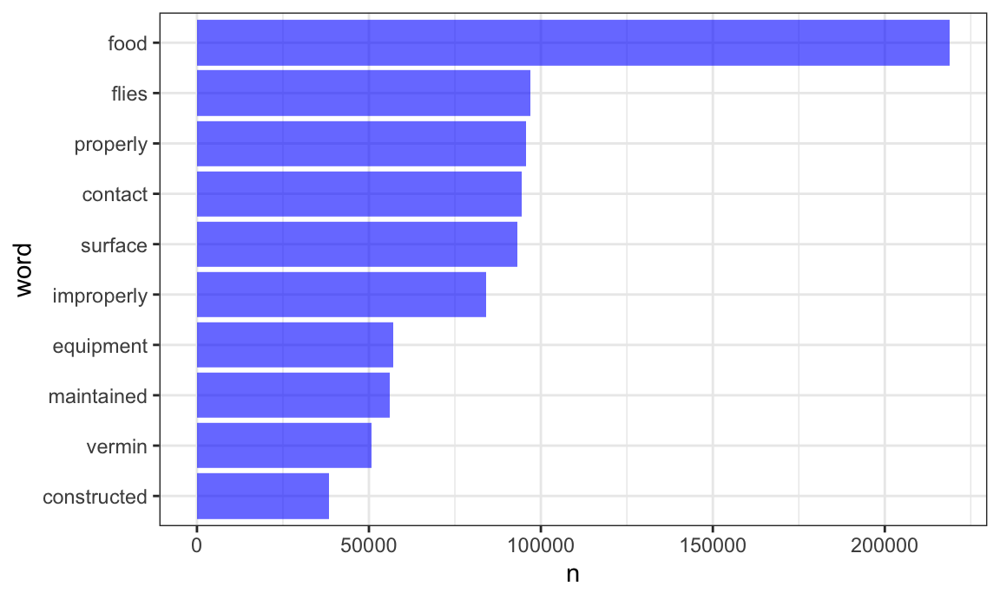
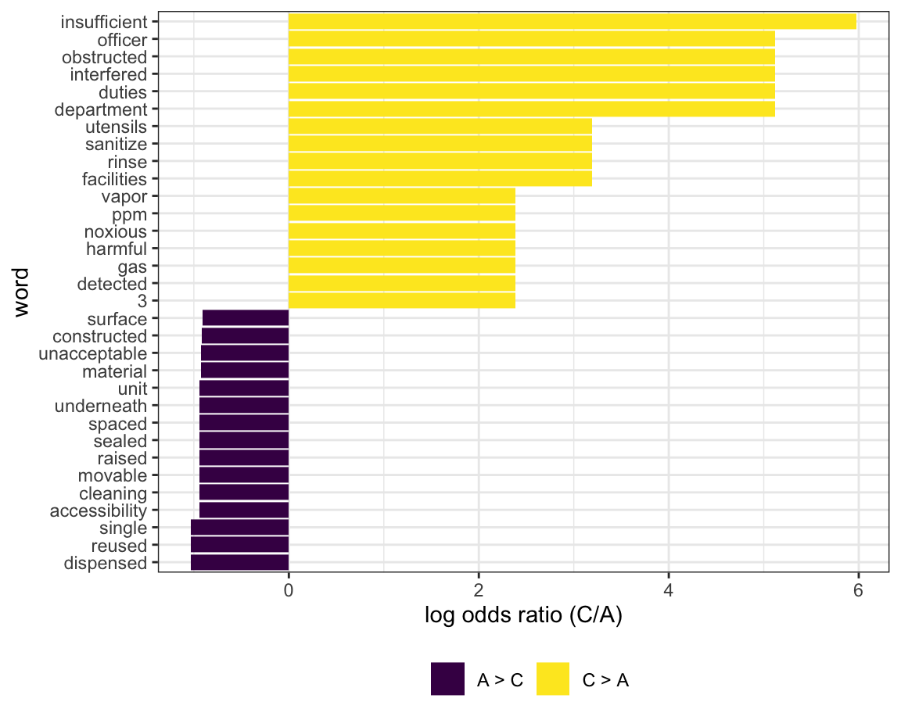
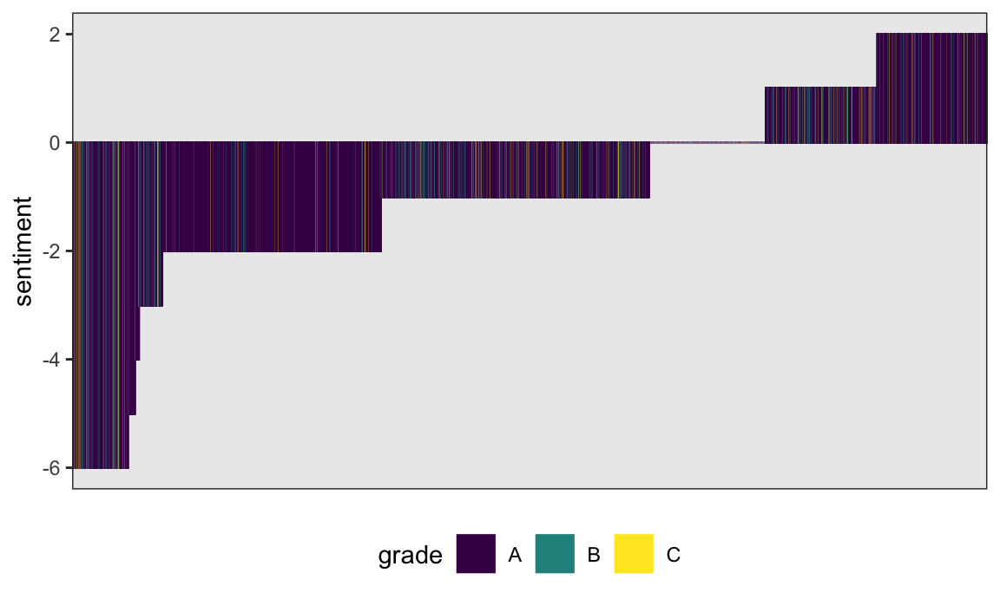
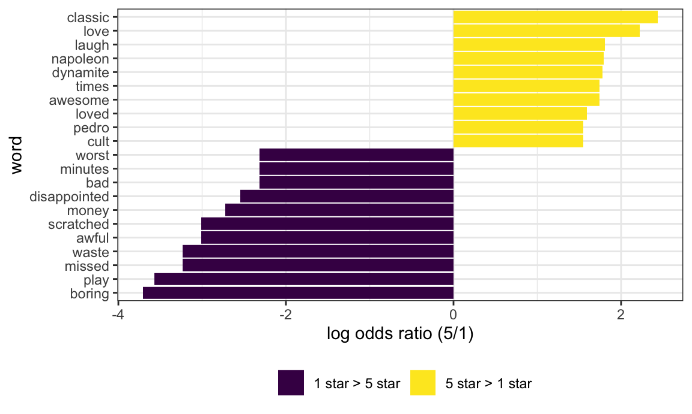
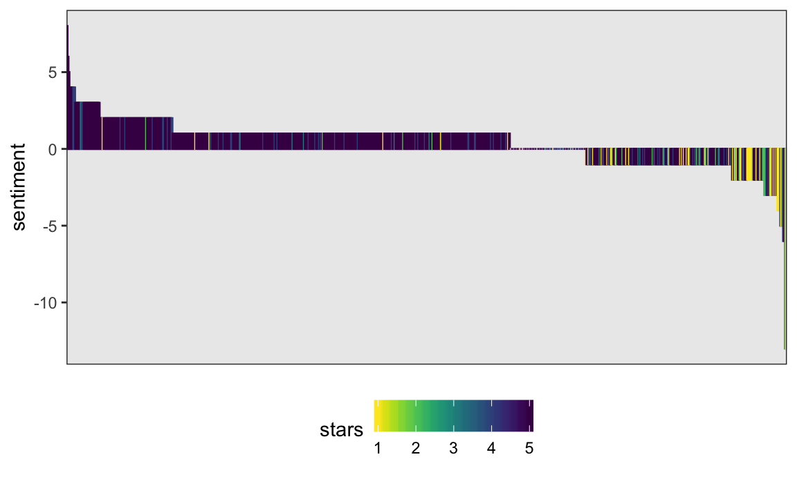

Tidy text
This is a bit of a diversion for a public-health-focused course in data science, but it’s fun, related to web data, strings, and factors, and emphasizes tools in data wrangling. It’s most closely related to content in the Data Wrangling II topic, and the slack channel for extra topics is here.
Example
I’ll write code for today’s content in a new R Markdown document called tidy_text.Rmd, and put it in the extra topics directory / GitHub repo. I’m going to load the usual packages, as well as tidytext.
library(tidyverse)
library(viridis)
library(p8105.datasets)
library(tidytext)Data
We’re going to examine the NYC Restuarant Inspections data, which we looked at in strings and factors. I’ll load this dataset and restrict to variables I’m interested in right now.
data("rest_inspec")
rest_inspec =
rest_inspec %>%
filter(grade %in% c("A", "B", "C")) %>%
mutate(inspection_num = row_number(),
boro = str_to_title(boro)) %>%
select(inspection_num, boro, grade, score, critical_flag, dba, cuisine_description, zipcode, violation_description)Words and wordcounts
To illustrate tidy text and text analysis, we’ll focus on the violation_description which is stored as a string. To begin our analysis, we’ll un-nest the tokens (i.e. words) in each row; the result is a tidy dataset in which each word is contained within a separate row.
inspection_words =
rest_inspec %>%
unnest_tokens(word, violation_description)There are lots of words here that are uninformative. We’ll remove “stop words” using anti_join; in other settings the words you want to remove might be different.
data(stop_words)
inspection_words =
anti_join(inspection_words, stop_words)
## Joining, by = "word"Great! Let’s take a look at the most commonly used (informative) words in this dataset.
inspection_words %>%
count(word, sort = TRUE) %>%
top_n(10) %>%
mutate(word = fct_reorder(word, n)) %>%
ggplot(aes(x = word, y = n)) +
geom_bar(stat = "identity", fill = "blue", alpha = .6) +
coord_flip()
## Selecting by n
Comparing words across groups
Let’s compare which words are more likely to come from a “C” versus “A” inspection grade. We limit to words that appear at least 5 times and compute the approximate log odds ratio for each word.
word_ratios =
inspection_words %>%
filter(grade %in% c("A", "C")) %>%
count(word, grade) %>%
group_by(word) %>%
filter(sum(n) >= 5) %>%
ungroup() %>%
spread(grade, n, fill = 0) %>%
mutate(
C_odds = (C + 1) / (sum(C) + 1),
A_odds = (A + 1) / (sum(A) + 1),
log_OR = log(C_odds / A_odds)
) %>%
arrange(desc(log_OR)) We plot the top 15 most distinct words (that is, words that appear much more frequently in one group than the other) below.
word_ratios %>%
mutate(pos_log_OR = ifelse(log_OR > 0, "C > A", "A > C")) %>%
group_by(pos_log_OR) %>%
top_n(15, abs(log_OR)) %>%
ungroup() %>%
mutate(word = fct_reorder(word, log_OR)) %>%
ggplot(aes(word, log_OR, fill = pos_log_OR)) +
geom_col() +
coord_flip() +
ylab("log odds ratio (C/A)") +
scale_fill_discrete(name = "")
A lot of these seem pretty reasonable.
Sentiment analysis
Finally, let’s score the sentiment in each word. We’ll use the “bing” (like Bing Liu, not like bing.com) sentiment lexicon, which simply categorizes each word as having a positive or negative sentiment.
bing_sentiments = get_sentiments("bing")Note this is not perfect for this dataset – for example, this scores cold as negative which might not be accurate – but we’ll use it anyway.
We need to combine this lexicon with our tidy dataset containing words from each inspection. Note that only words that are in the sentiment lexicon will be retained, as the rest of the words are not considered meaningful. We’ll also count the number of positive and negative words in each violation description, and create a score that is the difference between the number of positive words and negative words.
inspection_sentiments =
inspection_words %>%
inner_join(., bing_sentiments) %>%
count(inspection_num, sentiment) %>%
spread(sentiment, n, fill = 0) %>%
mutate(sentiment = positive - negative) %>%
select(inspection_num, sentiment)
## Joining, by = "word"We now have sentiment scores for each inspection. We’ll combine these with our original dataset, which had inspections in each row rather than words in each row – the data tidied for text analysis aren’t really suitable for our current needs.
inspection_sentiments =
right_join(rest_inspec, inspection_sentiments,
by = "inspection_num")Finally, let’s make a plot showing inspection sentiments and grades. This could be a pretty big plot, so I’ll restrict to Manhattan and sample only a few thousand entries.
set.seed(1)
inspection_sentiments %>%
filter(boro == "Manhattan") %>%
sample_n(5000) %>%
mutate(inspection_num = factor(inspection_num),
inspection_num = fct_reorder(inspection_num, sentiment)) %>%
ggplot(aes(x = inspection_num,
y = sentiment, fill = grade, color = grade)) +
geom_bar(stat = "identity") +
theme(axis.title.x = element_blank(),
axis.text.x = element_blank(),
axis.ticks.x = element_blank()) +
scale_fill_viridis(discrete = TRUE) +
scale_color_viridis(discrete = TRUE) 
It’s not clear that sentiment is related to grade; this could reflect the very formal language of inspections or the inappropriateness of our lexicon.
Napoleon
A much more interesting example is the “Napoleon Dynamite reviews”, which we’ll analyze using the same basic approach as above. First, I’ll re-use code from iteration and listcols to scrape the 1000 most recent reviews on Amazon (and cache the result).
library(rvest)
## Loading required package: xml2
##
## Attaching package: 'rvest'
## The following object is masked from 'package:purrr':
##
## pluck
## The following object is masked from 'package:readr':
##
## guess_encoding
read_page_reviews = function(url) {
h = read_html(url)
title = h %>%
html_nodes("#cm_cr-review_list .review-title") %>%
html_text()
stars = h %>%
html_nodes("#cm_cr-review_list .review-rating") %>%
html_text() %>%
str_extract("\\d") %>%
as.numeric()
text = h %>%
html_nodes(".review-data:nth-child(5)") %>%
html_text()
data_frame(title, stars, text)
}
url_base = "https://www.amazon.com/product-reviews/B00005JNBQ/ref=cm_cr_arp_d_viewopt_rvwer?ie=UTF8&reviewerType=avp_only_reviews&sortBy=recent&pageNumber="
dynamite_reviews =
tibble(page = 1:100,
urls = str_c(url_base, page)) %>%
mutate(reviews = map(urls, read_page_reviews)) %>%
unnest()The output of the code above is a successfully scraped dataset with 5 and 1000 rows – one row for each review. For each review we get the title of that review, the number of stars it received, and text that describers the users feelings about the movie.
Next we’ll turn this into a tidy dataset using the text in the reviews and remove stop words.
dynamite_reviews =
dynamite_reviews %>%
as_tibble() %>%
mutate(review_num = row_number())
data(stop_words)
dynamite_words =
dynamite_reviews %>%
unnest_tokens(word, text) %>%
anti_join(stop_words) %>%
arrange(review_num)
## Joining, by = "word"The code chunk below produces a table of the most frequently used in one- and five-star reviews.
dynamite_words %>%
filter(stars %in% c(1, 5)) %>%
group_by(stars) %>%
count(word) %>%
top_n(5) %>%
knitr::kable()
## Selecting by n| stars | word | n |
|---|---|---|
| 1 | dumb | 8 |
| 1 | funny | 9 |
| 1 | movie | 43 |
| 1 | time | 9 |
| 1 | watch | 8 |
| 5 | classic | 115 |
| 5 | funny | 119 |
| 5 | love | 140 |
| 5 | movie | 393 |
| 5 | watch | 87 |
The table above gives the top 5 most frequently used words in 1-star and 5-star reviews. Movie is the most used word for both 1 and 5-star reviews, though other words, like dumb differentiate 1-star reviews from 5-star reviews, which have words like love.
Word frequency might be misleading because there are 774 5-star reviews and only 64 1-star reviews.
To look a relative word frequency we plot the (approximate) log odds ratio for word appearance comparing 1-star reviews to 5-star reviews, shown below.
word_ratios <- dynamite_words %>%
filter(stars %in% c(1, 5)) %>%
count(word, stars) %>%
group_by(word) %>%
filter(sum(n) >= 3) %>%
ungroup() %>%
spread(stars, n, fill = 0) %>%
mutate_if(is.numeric, funs((. + 1) / sum(. + 1))) %>%
mutate(logratio = log(`5` / `1`)) %>%
arrange(desc(logratio))
## Warning: funs() is soft deprecated as of dplyr 0.8.0
## Please use a list of either functions or lambdas:
##
## # Simple named list:
## list(mean = mean, median = median)
##
## # Auto named with `tibble::lst()`:
## tibble::lst(mean, median)
##
## # Using lambdas
## list(~ mean(., trim = .2), ~ median(., na.rm = TRUE))
## This warning is displayed once per session.
word_ratios %>%
mutate(pos_log_OR = ifelse(logratio > 0, "5 star > 1 star", "1 star > 5 star")) %>%
group_by(pos_log_OR) %>%
top_n(10, abs(logratio)) %>%
ungroup() %>%
mutate(word = fct_reorder(word, logratio)) %>%
ggplot(aes(word, logratio, fill = pos_log_OR)) +
geom_col() +
coord_flip() +
ylab("log odds ratio (5/1)") +
scale_fill_discrete(name = "")
Words like “classic”, “laugh”, and “love” have high relative frequency in the 5-star reviews and “boring”, “worst”, and “waste” have high relative frequency in the 1-star reviews. This seems to be a polarizing film.
Finally we conduct a sentiment analysis of the review texts. Below is a plot of the sentiment results, colored by star rating.
dynamite_word_sentiments <- dynamite_words %>%
inner_join(get_sentiments("bing")) %>%
count(review_num, sentiment) %>%
spread(sentiment, n, fill = 0) %>%
mutate(sentiment = positive - negative) %>%
left_join(dynamite_reviews)
## Joining, by = "word"
## Joining, by = "review_num"
ggplot(dynamite_word_sentiments,
aes(x = reorder(review_num, -sentiment),
y = sentiment, fill = stars, color = stars)) +
geom_bar(stat = "identity") +
theme(axis.title.x=element_blank(),
axis.text.x=element_blank(),
axis.ticks.x=element_blank()) +
scale_fill_viridis(direction = -1) +
scale_color_viridis(direction = -1) 
Sentiment seems to be at least somewhat associated with star rating in that more positive sentiments are more blue-purple (4-5 stars) and more negative sentiments are more green-yellow.
Here is the text from the most positive review:
dynamite_word_sentiments %>%
filter(sentiment == max(sentiment)) %>%
pull(text)
## [1] "Love, love and love! My children ages 13, 10 and 8 enjoy family movie nights and my husband and I were looking for something that we all could enjoy. This movie was perfect! So much fun and beyond quotable comments. A fun family film!"
And here is the text from the most negative 1-star review:
dynamite_word_sentiments %>%
filter(sentiment == min(sentiment),
stars == 1) %>%
pull(text)
## [1] "Let me start by openly admitting that I am an 80's throwback and proud of it. I understand that my era did not produce horribly intelligent, deeply touching movies. That being said, this movie puts the Du-h! in Dumb!! My teenage daughter had seen it a sleepover, so we rented it so she could show me how silly it is for our girly night. She actually got tickled at a few spots on her second run through it. I sat open mouthed, amazed at the sheer senselessness of the whole thing...waiting desperately for a plot or growth of a character. None came. Since we had it rented for the weekend, she showed it to her older brother the next night. She giggled again, and he snickered with a confused look on his face once in a while. Then we couldn't let my Hubby miss out on the sheer stupidity of it all, so we watched it with him on Sunday afternoon. Our daughter and son both snickered here and there, mostly at the looks on their parents' faces. My husband was, as was I, gobsmackered. We kept looking at each other as if to assure each other that it was indeed that painfully dumb. The only real emotion I felt was a horribly heartbroken, sick to my stomach feeling for Napoleon and his friends for being so awkward and socially inept...I remember kids who struggled in school that way, and I always almost cried every time I saw them in a tough situation. If anything it brought back bad memories of school....who needs that? Anyway, all this to say it is a story about an awkward boy who uses bluster and dumb responses to deal with not fitting in. It follows (if you can exaggerate and say there is a plot) him as he finds friends (just as goofy as he) and finds romance...sort of."
Other materials
- The framework we used is explained in detail in the Tidy Text book
- One of the book’s authors, Julia Silge, has a nice video talking about the work
- The other of the book’s authors, Dave Robinson, used the approach to examine Donald Trump’s tweets in this this blog post
The code that I produced working examples in lecture is here.